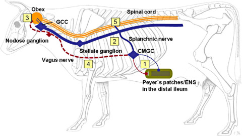

Bovine Spongiform Encephalopathy (BSE) in Cows

What is Bovine Spongiform Encephalopathy (BSE)?
Bovine Spongiform Encephalopathy (BSE), commonly known as "mad cow disease," is a fatal neurodegenerative disease in cattle caused by abnormal prion proteins. It affects the brain and nervous system, leading to severe neurological symptoms.
Symptoms of BSE in Cows:
- Changes in behavior, such as nervousness or aggression
- Loss of coordination and difficulty walking
- Decreased milk production
- Weight loss despite a normal appetite
- Progressive deterioration leading to paralysis
Causes:
- Consumption of contaminated animal feed containing infected meat and bone meal
- Spread through exposure to infected brain or spinal tissue
Treatment and Prevention:
There is no cure for BSE, and infected cattle must be culled to prevent the spread. Preventative measures include banning the use of animal by-products in cattle feed, strict surveillance programs, and ensuring proper feed regulations to minimize exposure to prion-infected material.